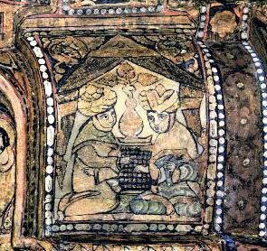

Ajedrez
# Historia
El ajedrez es un antiguo juego de guerra y estrategia. Las primeras referencias del juego se originan en la India del siglo VI con el nombre de Chaturanga, cuyo significado en sánscrito es "Las cuatro partes".
El Chaturanga hace referencia a las cuatro partes fundamentales de todo ejército hindú, dirigidas por el Raja y su consejero. Esta referencia se menciona en la obra épica hindu del "Majabhárata" o "La gran historia del Bharata".
Cuando el Chataranga llega al imperio Persa este se reinterpreta como Chatrang. El libro persa del siglo X "Muraj Adh-dhahab" o "Los Prados de Oro", describe las seis variantes oficiales del Chatrang que la aristocracia persa practicaba .
Los persas fueron quienes comenzaron a exclamar Shah cuando el Rey estaba en peligro y Shah Mat cuando el rey habia muerto. Estas expresiones han evolucionado a sus actuales Jaque y Jaque Mate hispanos.
La difusión del Chataranga en otras partes del mundo como China, Japón y Corea dio origen a las variantes asiaticas Xiangqi, Shogi y Janggi respectivamente.
Con la conquista arabe de Persia en el siglo VII, el juego se adapta al Shatranj. La version Islamica prohibe apostar, blasfemar o representar a las piezas del ajedrez con idolos animales o humanoides. Es debido a esta ultima norma religiosa que las piezas del ajedrez resultan en sus actuales representaciones abstractas.
Los arabes introducen el Shatranj en Africa, Sicilia y en la Peninsula Iberica. En el norte de africa los Moros adaptan el Shatranj al Shaterej y en el siglo X lo transmiten a Europa con la conquista Islamica de España.
En españa el Shaterej es interpretado como Acedrex y finalmente Ajedrez. Sin embargo para las demas lenguas romances el juego se denomina segun la expresion persa Shah. Por ejemplo en Ingles se denomina Chess, en frances es Echecs y en aleman es Schach.
En Europa se añade la alternacion de colores claros y oscuros gracias al desarrollo en paralelo de las Damas. En el siglo XVI se introducen multiples reglas importantes incluyendo a la reina como la pieza mas poderoza, el enroque, las dos casillas iniciales del peon y la captura al paso.
El primer torneo internacional se celebro en Londres de 1851, en donde Staunton y Anderssen fueron considerados los mejores jugadores del mundo. Tambien se estandariza el set oficial de piezas utilizando el diseño favorito de Staunton (Piezas Staunton).
# Fundamentos
# El Tablero
Compuesto por 64 casillas cuadradas que forman una cuadricula de 8x8. Todas las casillas alternan entre colores claros y oscuros. Las casillas, o escaques, tienen un nombre compuesto por la interseccion de su columna y de su fila.
El tablero se divide en campos o mitades verticales y en flancos o mitades horizontales. Las cuatro casillas centrales componen el centro principal y las 16 casillas centrales componen el centro aumentado.
El tablero se encuentra correctamente orientado cuando la casilla inferior derecha es de color claro.
# Posicion Inicial
Ambos jugadores se colocan frente a frente con el tablero en medio y cada uno recibe un juego de 16 piezas: 8 peones, 2 torres, 2 caballos, 2 alfiles, 1 reina y 1 rey.
Las piezas se colocan en las primeras dos filas frente a cada jugador. En la segunda y septima fila se colocan todos los peones, las demas piezas se colocan en la primera y octaba fila.
Las torres en las columnas (a y h), los caballos en (b y g), los alfiles en (c y f), la reina en (d) y el rey en (e).
# Las Piezas
- Peón (Pawn): Se mueve una casilla hacia enfrente. Captura una pieza que se encuentre en alguna de sus dos casillas diagonales superiores. En su primer movimiento pueden optar por moverse dos casillas en vez de una.
- Torre (Rook): Se mueve las casillas que necesite en alguna direccion vertical u horizontal. Captura la pieza que se encuentre en su camino.
- Alfil (Bishop): Se mueve las casillas que necesite en alguna direccion diagonal. Captura la pieza que se encuentre en su camino.
- Caballo (Knight): Se mueve dos casillas en alguna direccion vertical u horizontal y una casilla hacia la derecha o izquierda con respecto al movimiento inicial. Captura la pieza que se encuentre en la casilla de destino final. Es la unica pieza que ignora a otras piezas que se encuentren en su camino.
- Reina (Queen): Se mueve las casillas que necesite en alguna direccion vertical, horizontal o diagonal. Captura la pieza que se encuentre en su camino.
- Rey (King): Se mueve una casilla en alguna direccion vertical, horizontal o diagonal. Captura la pieza que se encuentre en su camino. Es ilegar mover al rey a una casilla en donde pueda ser capturado en el siguiente turno.
# Valor de las Piezas
Este valor relativo es una aproximacion y depende en gran medida del contexto de las piezas, por ejemplo:
- Las torres valen más en posiciones despejadas.
- Los alfiles valen más con peones en casillas del color contrario.
- Los caballos valen más en posiciones cerradas.
- Todas las piezas valen más conforme más cerca se encuentren del centro del tablero.
| Pieza | Valor en Peones |
|---|---|
| Peon | 1 |
| Caballo | 3 |
| Alfil | 3 |
| Torre | 5 |
| Reina | 9 |
| Rey | Invaluable |
# Enroque
Movimiento especial en el que la torre intercambia su lugar con el rey. Este movimiento proteje al rey al inicio de la partida y coloca a la torre en las columnas centrales.
El movimiento solo es posible cuando es el primer movimiento de ambas piezas; no hay piezas que obstruyan el intercambio y ninguna casilla por las que pasa el rey esta siendo atacada.
Cuando el rey se intercambia con la torre en la columna (a) decimos que es un Enroque por el Flanco de la Reina (Queenside), si lo hace con la torre en la columna (h) decimos que es un Enroque por el Flanco del Rey (Kingside).
# Captura al Paso
La captura al paso es una captura especial del peon. Fue creada para evitar que un peon salte la casilla de captura de otro al utilizar su movimiento inicial de dos casillas. El peon que realiza la captura se coloca detras del peon capturado.
Es necesario realizar esta captura inmediatamente o de lo contrario se pierde el derecho a realizarla.
# Promoción
Cuando un peon avanza hasta la primer fila del oponente entonces se convierte, corona o promueve a una pieza distinta, con la excepcion del rey.
Generalmente un peon se promueve a una reina, en el caso de que se promueva a otra pieza se le denomina subpromocion.
Esta regla era rechazada en la edad media ya que cuestionaba la monogamia real, sin embargo es instituida finalmente en el Codigo Internacional Revisado de Ajedrez de Londres 1883.
# Ganar
Se denomina jaque a la posicion en la que un rey esta siendo atacado por una pieza enemiga, mientras que jaque mate es un jaque en el cual no se puede evitar la captura. En caso de realizar jaque mate el jugador que ha capturado al rey gana la partida.
Para evitar jaque mate prematuros esta prohibido colocar al rey en una posicion de jaque o dejar que capturen al rey cuando existen movimientos validos para evitar la captura.
Otras formas de ganar una partida incluyen ceder el juego, quedarse sin tiempo o por decision del arbitro al infringir las leyes del ajedrez.
# Tablas
Se dice que existe un empate o tablas cuando existe un ahogamiento, insuficiencia de material, repeticion triple de posicion, cincuenta movimientos sin mover peones o capturar o por mutuo acuerdo.
El ahogamiento se produce al no poder realizar ningun movimiento valido y sin embargo el rey no se encuentra en jaque.
Cuando un jugador retorna a la misma posicion tres veces utilizando su turno se declara el empate.
En casos exepcionales un jugador pierde por falta de tiempo y su oponente no puede realizar jaque mate por insuficiencia material. En este caso tambien se declara el empate.
La insuficiencia material se produce al no poder realizar jaque mate con las piezas restantes:
- Rey contra Rey
- Rey y Caballo contra Rey
- Rey y Caballo contra Rey y Caballo
- Rey y Alfil contra Rey
- Rey y Alfil contra Rey y Caballo
- Rey y Alfil contra Rey y Alfil
# General
# Cambio de Piezas
Cuando un jugador logra capturar una pieza enemiga sin perder a una suya o a costa de una pieza de menor valor se dice que ha ganado material.
Un cambio de piezas consiste en la captura seriada de piezas y resulta conveniente para obtener una ventaja material. Otras razones para realizar un cambio de piezas incluyen la simplificacion de la posicion, dificultando un jaque mate, o para liberar espacio en el tablero que nos permita maniobrar con facilidad.
# Tiempos de Control
Un tiempo de control define la cantidad maxima de tiempo para cada jugador. El jugador que supere el tiempo de control definido pierde la partida.
Los incrementos y retrasos son tecnicas que reducen la cantidad de juegos perdidos por falta de tiempo. Los incrementos añaden una cantidad de tiempo al completar una cantidad de movimientos, mientras que los retrasos añaden una pausa antes de iniciar el reloj del oponente.
En el campeonato mundial cada jugador cuenta con 100 minutos. Despues de 40 movimientos se añaden 50 minutos, despues de 60 se añaden 15 minutos y finalmente en cada movimiento se añaden 30 segundos.
En caso de empate se realizan cuatro juegos rápidos, dos juegos Blitz, y un último juego de Armageddon o Sudden death. Si hay un empate en el último juego ganan automáticamente las negras.
# Torneos
Los torneos más reconocidos son los organizados por la USCF y la FIDE. Para realizar la clasificatoria se puede aplicar alguna de las siguientes modalidades: Match Competition,
Cada jugador mantiene un puntaje personal basandose en el sistema de puntuacion Elo. Manuel Léon Hoyos es el mejor jugador mexicano (2016) con 2602 puntos en (2012). El mejor jugador del mundo (2016) es Magnus Carlsen quien logro 2882 puntos en (2014).

A partir del puntaje Elo existen las siguientes categorías:
| Categoria | Puntaje Elo |
|---|---|
| Principiante | < 1200 |
| Clase D | 1200 - 1400 |
| Clase C | 1400 - 1600 |
| Clase B | 1600 - 1800 |
| Clase A | 1800 - 2000 |
| Candidate Master | 2000 - 2200 |
| Nacional Master | 2200 - 2300 |
| FIDE Master | 2300 - 2450 |
| International Master | 2450 - 2600 |
| Grand Master | > 2600 |
# FIDE
La FIDE es la autoridad que regula el ajedrez a nivel internacional. El Handbook es el manual oficial que publican, en donde se especifica:
- Misión, visión, membresía, instituciones, mesa ejecutiva, asociaciones, organigrama, drogas, elecciones, tesorería, premios, competencias, congreso, ética, títulos, puntuaciones, jugadores, árbitros, entrenadores, regulación del FOA, permisos, herramientas, sistema de clasificación, tiempos de control y calendario de competencias.
Adicionalmente FIDE publica las leyes de ajedrez, las reglas de accesibilidad, la regulación contra computadoras y la resolución de problemas. Algunas de las normas que ejercen las Leyes del Ajedrez:
- 3.9.2 Esta prohibido colocar o dejar al rey en jaque.
- 4.1 Solo se debe usar una mano para mover y parar el reloj.
- 4.3 Pieza tocada, pieza movida (o capturada).
- 6.9 Al quedarte sin tiempo pierdes. Si el oponente no puede hacer jaque mate entonces es tablas.
- 8.1.1 Obligacion de registrar la partida en notacion algebraica.
- 8.4 Concesion de la regla anterior en los ultimos 5 minutos, si no hay incrementos de mas de 30 segundos.
- 8.7 Al firmar el registro es resultado oficial aunque este incorrecto. Unico cambio es derecho del arbitro por 11.10.
- 11.10 Derecho a debatir las deciciones del arbitro, en especial sobre los resultados finales.
Las reglas anti-drogas prohiben el uso de: Anfetaminas (Adderall, Metilfenidato), Efedrina (Ephedrine), Pseudoefedrina (Pseudoephedrine), Modafinilo (Modafinil), Cafeina (13 μg por mm) y Codeina.
# Notacion
Para describir los movimientos de las piezas utilizamos la Notación Algebraica Estándar (SAN). Las piezas se abrevian usando su letra inicial. En ingles y en español son: Rey (K-R), Reina (Q-D), Torre (R-T), Alfil (B-A) y Caballo (N-C), mientras que la ausencia de un nombre simboliza al Peón.
La Notación Algebraica Estándar asume que las piezas se encuentran en su posición inicial. La Notación Algebraica con Figuras (FAN) es utilizada ampliamente por no depender del idioma.
| Descripción | Contrucción | Ejemplo |
|---|---|---|
| Mover | Nombre-Casilla Destino | Rh5 |
| Mover Peon | Casilla Destino | b3 |
| Promoción | Casilla Destino-Nombre | d8Q |
| Captura | Nombre-x/:-Casilla Destino | Bxc6 |
| Captura Peon | Fila Inicial-x/:-Casilla Destino | cxd5 |
| Captura al Paso | Fila Inicial-x/:-Casilla Destino-e.p. | exd6 e.p. |
| Enroque Flanco Rey | Dos Ceros | 0-0 |
| Enroque Flanco Reina | Tres Ceros | 0-0-0 |
| Piezas Iguales | Nombre-Fila-Casilla Destino | R1a3 |
| Piezas Iguales 2 | Nombre-Columna-Casilla Destino | Rfc1 |
| Piezas Iguales 3 | Nombre-Columna-Fila-Casilla Destino | Ra1c1 |
| Oferta de Empate | Signo de Igual entre Paréntesis | Rh5 (=) |
| Jaque | Nombre-Casilla Destino-+ | Rh5+ |
| Jaque Mate | Nombre-Casilla Destino-#/++ | Ra8++ |
| Puntaje | Ganaron Blancas | 1-0 |
| Puntaje | Ganaron Negras | 0-1 |
| Puntaje | Empate | 1/2-1/2 |
| Comentario | Pésimo o Blunder | ?? |
| Comentario | Malo o Mistake | ? |
| Comentario | Dudoso o Dubious | ?! |
| Comentario | Interesante o Interesting | !? |
| Comentario | Bueno o Good | ! |
| Comentario | Increíble o Excelent | !! |